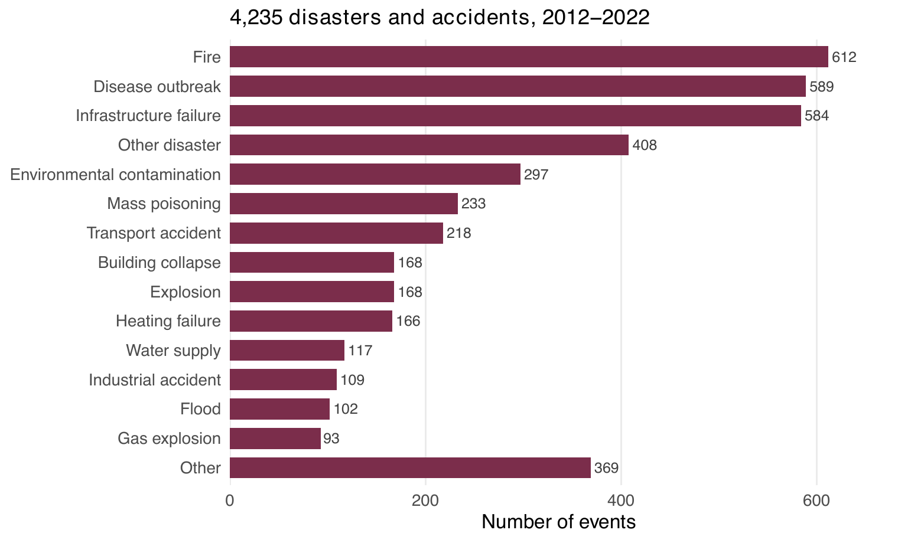
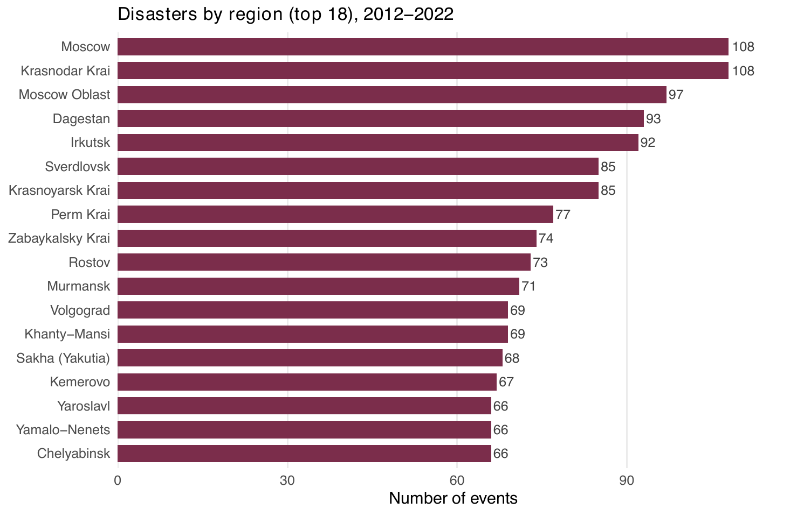
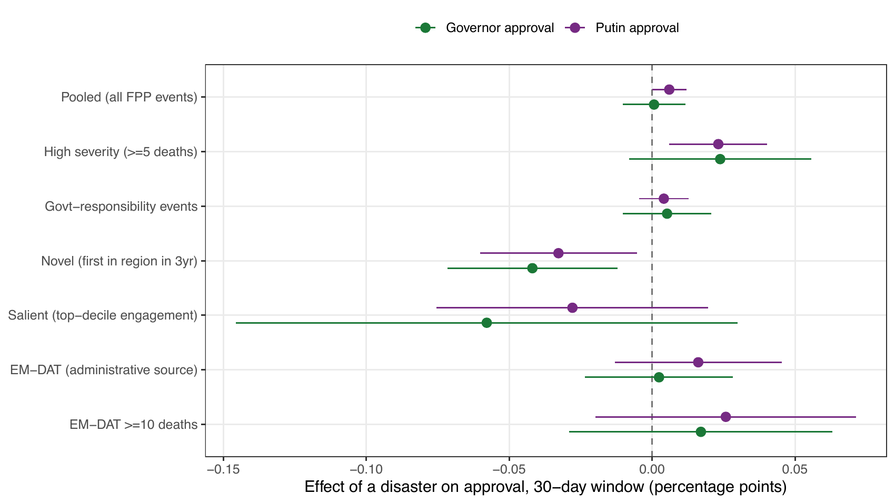
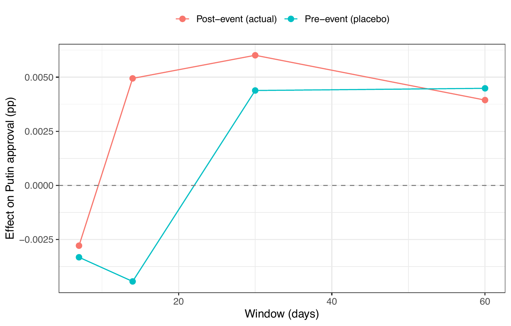
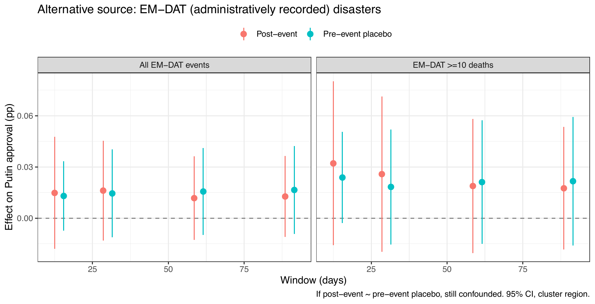
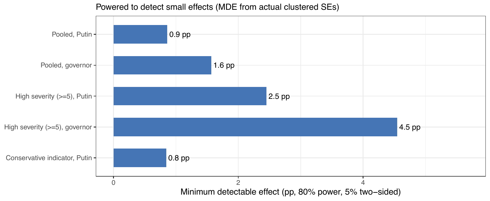
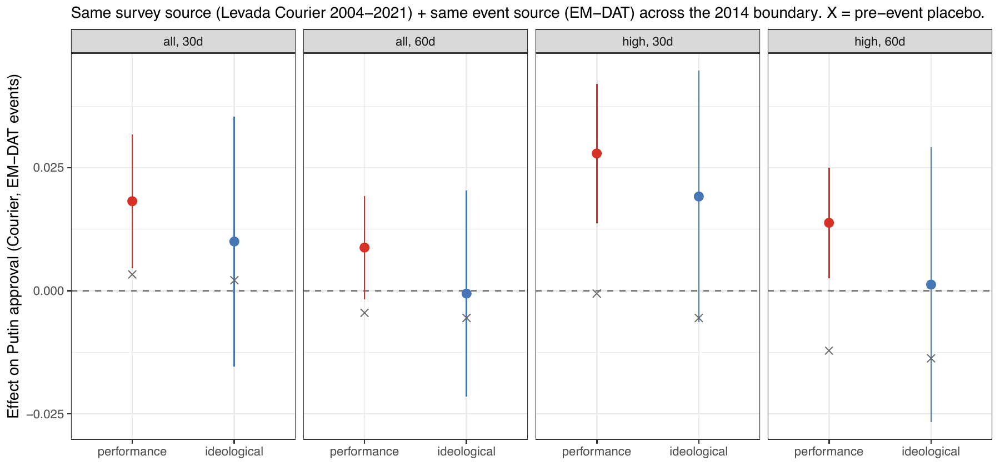

Disasters and the Absence of Accountability in Authoritarian Russia
Trinity College Dublin
September 1, 2026
Authoritarian publics do not hold the regime to account for disasters.
Source: FPP regional digests, 2012–2022


Individual-level difference-in-differences
Treatment: a disaster in the respondent’s region in the last 14 / 30 days
A disaster that has not happened yet cannot move current approval.

| Putin: effect | Putin: placebo | Gov: effect | Gov: placebo | |
|---|---|---|---|---|
| Disaster, 30d | 0.006+ | 0.004 | 0.001 | 0.005 |
| (0.003) | (0.004) | (0.006) | (0.006) | |
| Region / month / source FE | ✓ | ✓ | ✓ | ✓ |
| \(N\) | 1,066,957 | 1,066,957 | 329,988 | 329,988 |

The “rally” and the “punishment” are the same confounded association, sliced two ways.

The pre-registered moderators and an extended battery:
Nothing produces a robust effect that survives the placebo.

The null is informative, not a power failure.
Future work
Noah Buckley · Trinity College Dublin
noah.buckley@tcd.ie · noahbuckley.github.io
Questions?
| Putin: effect | Putin: placebo | Gov: effect | Gov: placebo | |
|---|---|---|---|---|
| High-severity, 30d | 0.023** | 0.014+ | 0.024 | 0.000 |
| (0.009) | (0.008) | (0.016) | (0.016) | |
| Region / month / source FE | ✓ | ✓ | ✓ | ✓ |
| \(N\) | 1,066,957 | 1,066,957 | 329,988 | 329,988 |
+ p<0.1, ** p<0.01

Buckley · Off the Hook · 2026